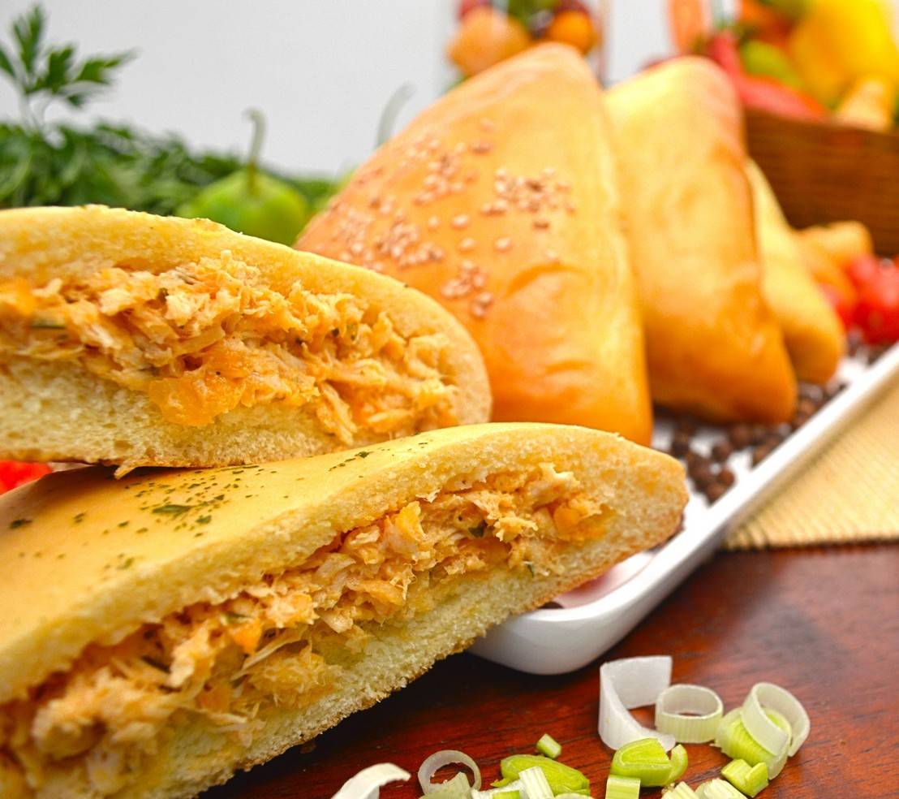

Receita Espetacular de Salgados
Embarque nessas maravilhosas receitas salgadas e amplie seu paladar!!

Ingredientes
- 1 xícara de chá de leite
- 1 xícara de chá de farinha de trigo
- 1 colher de sopa de margarina
- 1 gema
- 1 pitada de sal
- Queijo branco ou muçarela a gosto
Modo de Preparo
- Coloque o leite em uma panela, junte a farinha de trigo, a margarina, a gema e o sal, leve ao fogo e mexa bem com um garfo, até soltar da panela.
- Deixe esfriar, faça bolinhas e recheie com um pedacinho de queijo.
- Passe em clara de ovo só misturada e na farinha de rosca e frite em óleo bem quente.